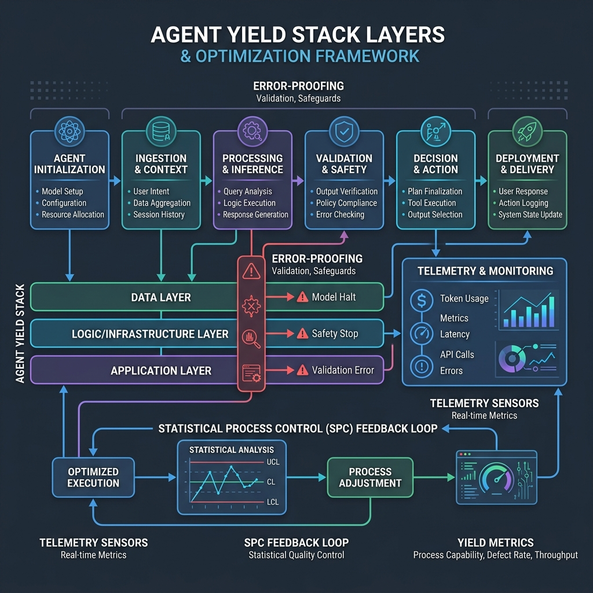
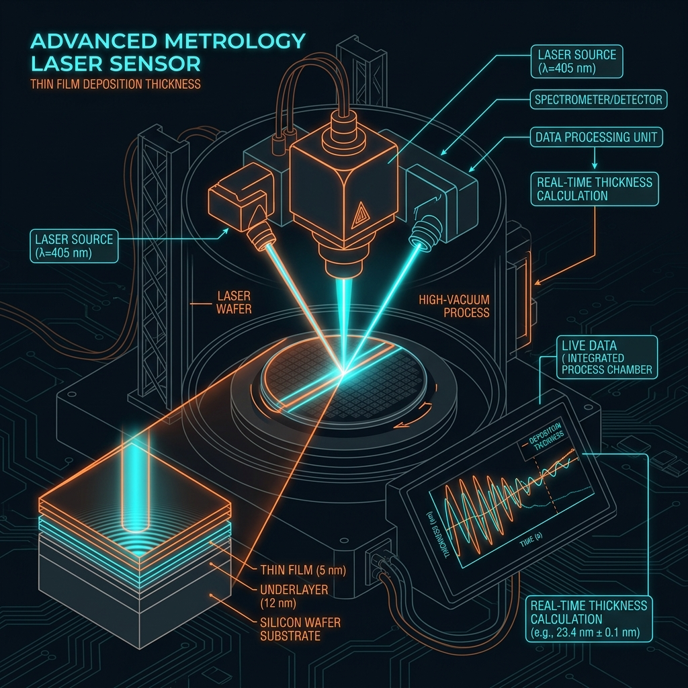
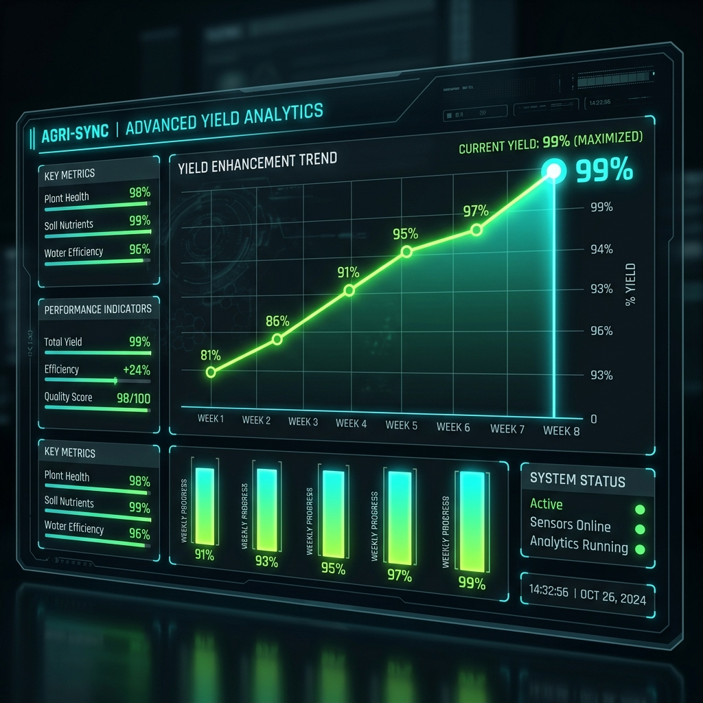
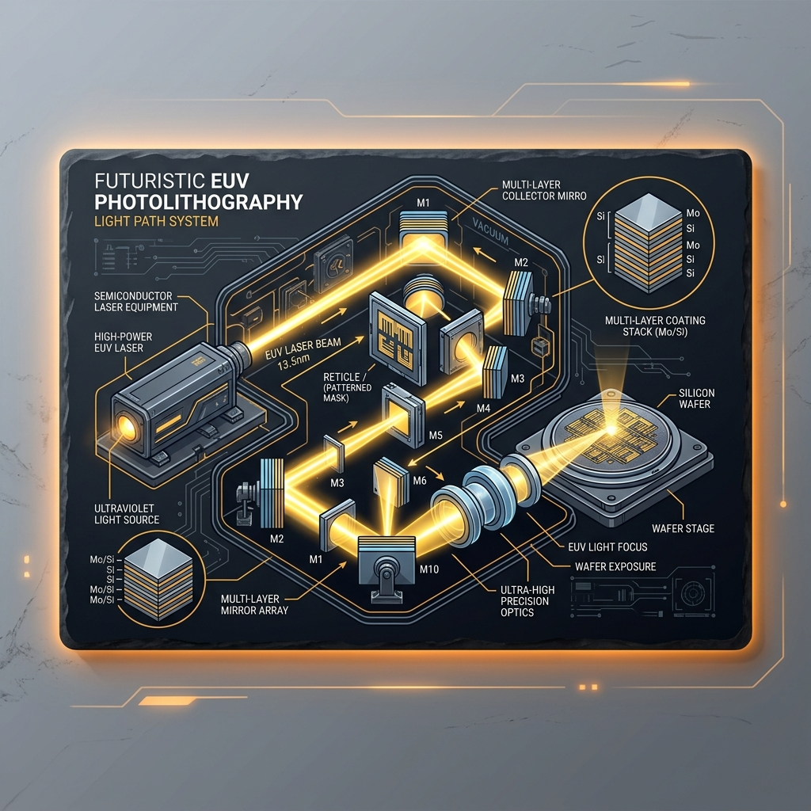
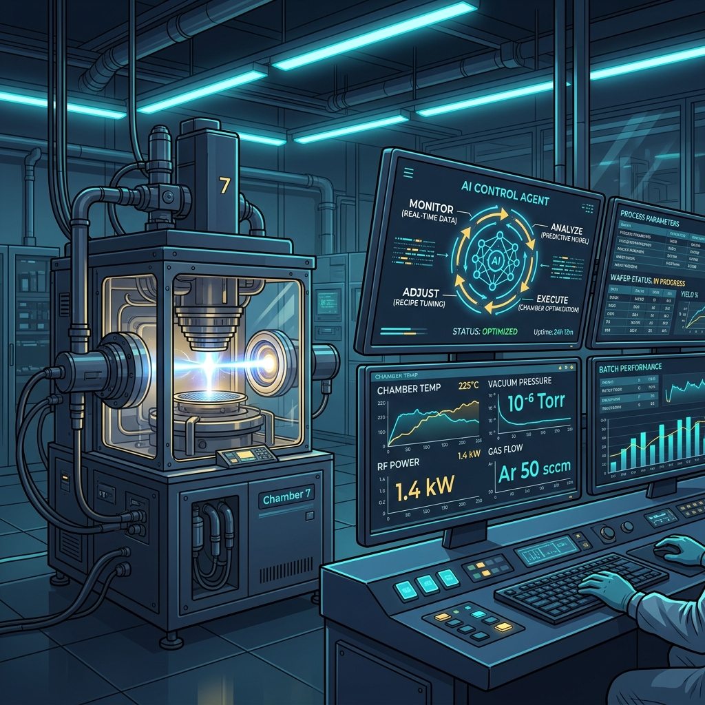
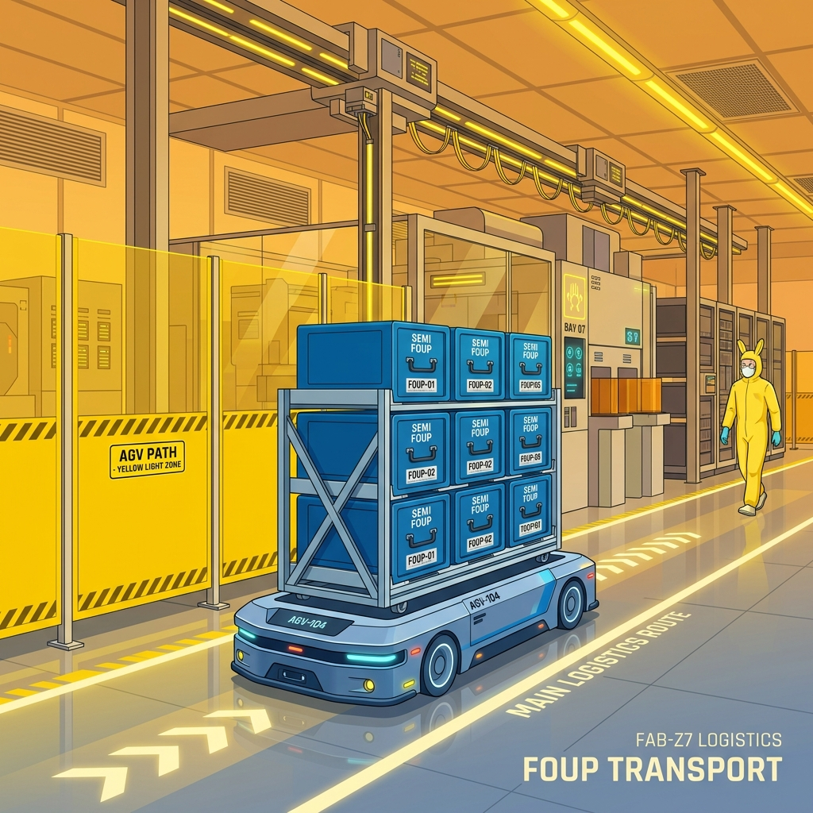

工作流轉換 - Step 1: 格式標準化
將給人看的散文翻譯成 AI 能精確執行的合約與規範
📍 參數化配置 (Parametrization)
將變數抽離為 parameters 參數（如 mode、temperature），使 SOP 轉化為高容錯的 Template 模板。
📍 引入 RFC 2119 規則強度規定
規範規則強度：MUST (絕對必須限制)、SHOULD (建議作法且未執行需說明)、MAY (彈性判定)。
📍 結構化 Markdown 區塊切分
用 Markdown 區隔 Parameters、Steps、Error Handling。既方便人類閱讀，更便於直接接入 MCP 當規格合約。

工作流轉換 - Step 2: 任務拆解與連結
精確劃分 Skill 的邊界，並使用 Artifacts 建立透明管道
📍 劃定 Skill 防守邊界 (Boundary)
防守範圍太大則平庸，太小則過度依賴人類。應以「具備獨立產出」作為單一 Skill 的防守防線。
📍 建立獨立的管道節點 (Pipeline Steps)
每個步驟獨立執行、獨立 debug、獨立替換。出錯時「壞哪裡改哪裡」，杜絕複合誤差。
📍 以 Artifacts (JSON) 實體數據串接
節點間不使用心電感應，而是靠明確定義的 JSON Artifacts。前一步的 Output 完美作為下一步的 Input。

工作流轉換 - Step 3: 雙向開發與迭代
用敏捷 Scrum 精神快速收斂並捕捉大腦中的默會知識
📍 暴露「默會知識 (Tacit Knowledge)」
指存在大腦記憶中難以言表的潛規則。第一版 SOP 常被忽略，必須讓 Agent 跑出去撞牆才能暴露漏洞。
📍 小步快跑的敏捷迭代循環
2天產出粗糙 SOP ➡️ 實跑 50 次暴露漏洞 ➡️ SOP 補上 MUST/SHOULD 規則，迅速收斂系統瑕疵。
📍 迭代效率大於理論完美
花兩個月閉門造車，不如兩天快速上線並完成 50 次迭代，真實執行反饋是排除 edge cases 的唯一法寶。

工作流轉換 - Step 4: 整合與執行環境
利用 MCP 開放協定統一接口，並設立人工安全防線
📍 MCP 協定：AI 世界的 USB-C
Anthropic 捐贈的開放協定。統一 Agent 與外部 API 的調用規格，免去針對不同平台重複開發的痛苦。
📍 人工確認點 (Human-in-the-Loop)
在高風險決策前設計 Checkpoint（如撥款、變更權限），強迫 Agent 暫停並在 Slack 等待人類核准。
📍 人類掌舵，AI 划槳
建立人類具備最終裁決權、但所有機械、確定性與重複性的繁瑣工作均由 AI 代勞的完美閉環系統。

Triage 案例 - 1. 標準化與任務拆解
針對 200 人公司日常非結構化雜事請求 triage 流程的拆解實踐
📍 INTERNAL_REQUEST_TRIAGE SOP
定義參數：raw_text, employee_id。MUST 驗證在職、MUST 分類 (IT/HR/Finance)、SHOULD 判定優先級。
📍 拆解為兩個獨立技能
技能 1：request-triage（身分驗證、分類、assignee 推薦，產出 JSON Artifact）與技能 2：reply-drafting。
📍 澄清機制與 JSON 中介檔串接
若 triage 發現語意模糊，會設置 needs_clarification=true，回覆草擬技能讀取後將 MUST 產生 2-3 個釐清問題。

Triage 案例 - 2. 迭代調優與真實整合
從 edge case 踩坑中完善防守，並對接企業真實生產系統
📍 雙向迭代與邊界收斂
踩坑：財務報銷錯分到 Other、assignee 錯配離職人。迭代補足防禦與匹配規則，準確率迅速飆升至 98%。
📍 對接真實 MCP 工具伺服器
使用 Google Sheet MCP 與 Slack MCP，自動將 triage JSON 登錄追蹤表格，並在 Slack 頻道動態通知負責人。
📍 設立安全 Checkpoint 防線
財務報銷金額 > $5000，或涉及 IT 管理權限變更時，強制暫停發送 Slack，等待管理員按 Approve 執行寫入。
